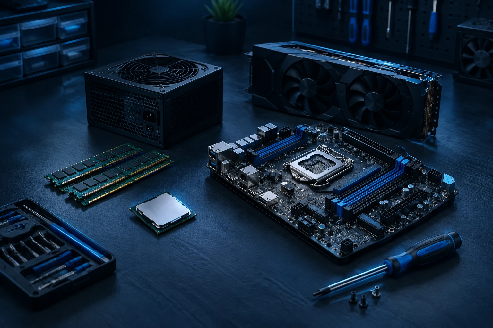

Ahora UF0864 · Resolución de averías lógicas
Aprende. Monta.
Diagnostica.
Domina el hardware con prácticas interactivas, apuntes actualizados y un entorno de aprendizaje pensado para ti.

UF0864 · Averías lógicas
Empezamos UF nueva
Aquí irán los apuntes, el simulacro y las prácticas de la UF0864 a medida que avancen las sesiones.
UF anteriores
UF0861 (montaje) y UF0863 (reparación de hardware). Siguen disponibles para repasar.
Prácticas de UF0861 y UF0863
Práctica 1
Simulador de averías
Investiga fallos, analiza síntomas y diagnostica el problema.
Acceder Práctica 2Montaje de un equipo
Instala componentes, conecta cables y enciende el equipo paso a paso.
Acceder Práctica 3Simulacro de examen
Pon a prueba tus conocimientos con preguntas tipo test y de respuesta corta.
AccederTemario de UF0861 y UF0863
| Sesión | Tema | Descripción | Apuntes |
|---|---|---|---|
| S07 | Fuente de alimentación | Voltajes, conectores, 80 Plus y señales de fallo. | Apuntes de Fuente de alimentación |
| S08 | El chasis | Tipos de chasis, flujo de aire, instalación de la placa y cable management. | Apuntes de El chasis |
| S09 | Tarjetas de expansión | GPU, slots PCIe, otras tarjetas y formatos de compra. | Apuntes de Tarjetas de expansión |
| S10 | GPU y sonido | Anatomía de la GPU, averías y descarte, y tarjeta de sonido. | Apuntes de GPU y sonido |
| S11 | Ampliaciones | Memoria, almacenamiento y compatibilidad de CPU, GPU, fuente y refrigeración. | Apuntes de Ampliaciones |
| S12 | Diagnóstico | Método en seis pasos y práctica en taller. | Apuntes de Diagnóstico |
| S13 | Conexionado | Conectores internos, conectores externos y práctica de conexionado. | Apuntes de Conexionado |
| S14 | Repaso general | Mapa de lo visto, datos que hay que saberse y simulacro del examen. | Apuntes de Repaso general |